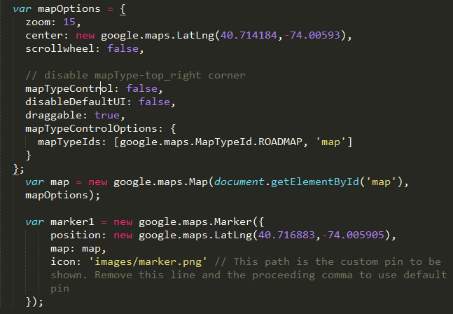
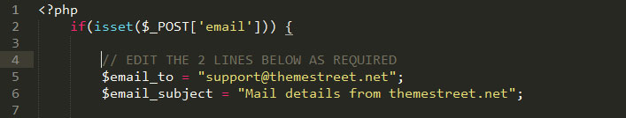

Created: 25th of October 2013.
By: ThemeStreet.Net
Email: support@themestreet.net
Thank you for purchasing "WDA" multipurpose website HTML5/CSS3 responsive template. If you have any questions that are beyond the scope of this help file, please feel free to email via our user page contact form here. Thanks so much!
This theme is a responsive multipurpose fixed layout with one column (in some sections are few columns). All sections of this template are nested in div with class layout. Every section has own #id (name). Here is the general structure:
Whole code in HTML file are well commented, and indented.
If you would like to edit the color, font, or style of any elements in one of these columns, you can do that in CSS files located inside css folder.
Our theme using two CSS files located in css folder. The first one is a min768.css file. In this file are all styles for resolutions greater then 768px (mobile resolution).
The second file is style.css. The file is separated into sections using:
/* --- + BASIC STYLES + --- */ /* --- + VARIABLES + --- */ /* --- + MIXINS + --- */ /* --- + SPRITES + --- */ /* --- + LAYOUT + --- */ /* --- + BUTTONS + --- */ /* --- + FORMS + --- */ /* --- + HEADER + --- */ /* --- + FOOTER + --- */ /* --- + CONTENT + --- */ /* --- + LIGHTBOX + --- */ /* --- + QUERIES + --- */
If you would like to edit a specific section of the site, simply find the appropriate label in the CSS file, and then scroll down until you find the appropriate style that needs to be edited.
All SCSS files are located in sass folder.
Basic styles and variables are located in _base.scss file.
Layout located in few scss files:
_layout.scss _buttons.scss _forms.scss _header.scss _footer.scss _content.scss _lightbox.scss _queries.scss
This theme imports few Javascript files located in js folder.
[functions for centering elements in isotope] [script for isotope filtering] [scripts for resolutions smaller than 768px] [scripts for resolutions larger than, or equal to 768px] [scripts for bx slider for different resolutions] [script for sliding page on different sections] [script for popup window in slider] [script for validate contact form] [script for placeholder] [map script] [scroll to the top icon]
- You can change coordinates for marker (pin) and for map. Second coordinates are for pin. First coordinates are for position on the map. See picture below.
You can change at 5th line of file form_data.php email where you want to receive emails from your website. Also this file is well commented. See image below for explanation.
We've included five psds with this theme:
If you'd like to change layout, colors, or anything else, you can do that in this files. All layers are named and grouped in folders.
Font used in this template is Google Font - Roboto. You can download it here.
We've used the following images, fonts, icons:
Also we've used the following scripts:
Once again, thank you so much for purchasing this theme. If you have any questions relating to this theme, please feel free to email via our user page contact form here. We'll do our best to assist.
ThemeStreet.Net